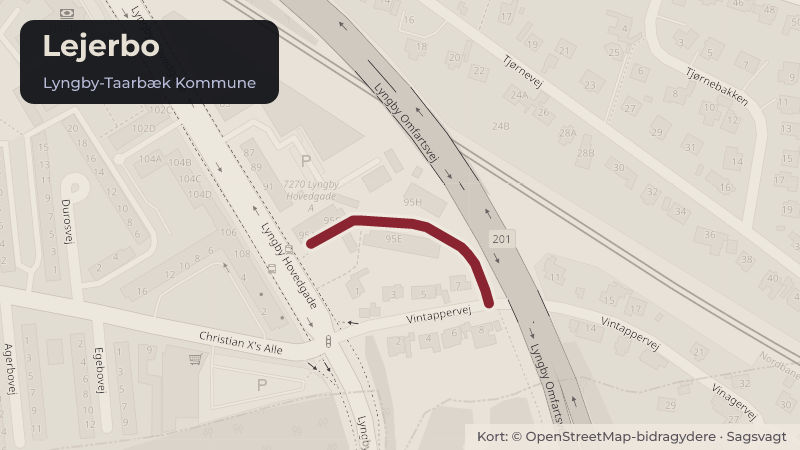

Besluttet 22. januar, Økonomiudvalget, Lyngby-Taarbæk
Boligorganisationen Carlshøj, afd. A - kollektiv råderet - bad

Kort fortalt
- Hvem
- Økonomiudvalget, Lyngby-Taarbæk Kommune
- Hvornår
- Torsdag 22. januar 2026
- Status
- Besluttet. Ad 1-2) Anbefalet.
- Næste skridt
- Godkender Kommunalbestyrelsen ordningen om kollektiv råderet, får beboere i afdeling A, som ønsker det, mulighed for at få et moderniseret badeværelset.
Er noget forkert her? Skriv til os
Læs hele sagen Kommunens egen tekst
Indstilling
Forvaltningen foreslår, at
1. den kollektive råderetsordning om badeværelser i boligorganisationen Carlshøj, afd. A
godkendes,
2. lejeforhøjelser over 5 % som følge af badeværelsesmoderniseringen, godkendes.
Problemstilling
DAB har den 11. december 2025 på vegne af boligorganisationen Carlshøj ansøgt om
godkendelse af kollektiv moderniseringspulje på 1.440.000 kr. til badeværelser i afdeling A
(bilag).
Formålet med ordningen er at vedligeholde og højne standarden i afdelingens boliger samtidig
med, at den enkelte beboer får indflydelse på moderniseringen af egen bolig.
Beboerne har på afdelingsmødet den 1. september 2025 fastsat følgende overordnede rammer
for badeværelsesmoderniseringerne (bilag):
Moderniseringspuljen er på 1.440.000 kr.
Det maksimale beløb pr. bad er fastsat til 120.000 kr. inkl. moms
Huslejetillægget vil blive ca. 648 kr. årligt, i 15 år, hvis beboeren udnytter det maksimale
beløb
Afdelingen dækker en vedligeholdelsesandel på 20 % af udgiften til moderniseringen
Der kan højest moderniseres tre badeværelser om året i fire år
Moderniseringerne finansieres ved lån i afdelingens egne midler.
Huslejetillægget dækker bl.a. nedrivning af eksisterende bad, montering af nyt bad inkl.
vådrumsmembran, opsætning af vægfliser. Beboeren har mulighed for at tilvælge ekstra ting,
som afregnes særskilt, fx håndklædetørrer (bilag).
Afdelingen betaler bl.a. for eventuelle reparationer af vægge samt udskiftning af
blandingsbatteri, håndvask og toilet efter behov..
Den kollektive råderet kan også bruges til at udskifte køkkener i flytteboliger, hvor
ejendomskontoret skønner, det er nødvendigt.
Finansiering
Puljen til modernisering af bad vil blive finansieret ved et 10-årigt lån på max. 1.400.000 kr. i
afdelingens egne midler. Forrentningen er fastsat til diskontoen plus 1 procentpoint. Beløbet
giver mulighed for at modernisere tre badeværelser om året i fire år. Afdelingen dækker selve
vedligeholdelsesdelen som følge af almindeligt slid og ælde, svarende til 20 % af udgiften til
moderniseringen. Midlerne hertil er afsat i afdelingens langtidsbudget.
Huslejetillæg
Det månedlige huslejetillæg beregnes, så det svarer til afdelingens udgifter til beboerens
forbedringsandel. Hvis det maksimale beløb på 120.000 kr. udnyttes, vil det betyde et lejetillæg
på ca. 648 kr. pr. måned i 15 år. I beregningen af huslejetillægget indgår udgifter til
håndværkere og materialer, finansieringsudgifter og honorar til DAB Lejerbo på 3,125 %.
Lejetillægget vil for alle boliger medføre en lejestigning på mere end 5 % for alle boliger (bilag).
Den kollektive råderetsordning er godkendt af selskabsbestyrelsen den 9. september 2025
(bilag).
Løsninger
Afdelingsmødet i en almen boligafdeling kan beslutte, at det skal være muligt at få bestemte
forbedringer gennemført i et lejemål efter beboerens ønske, jf. almenboliglovens § 37 b.
Ordningen kaldes kollektiv råderet. Ved forbedringer forstås ændringer af lejemålet, der for
beboeren medfører en forøgelse af brugsværdien. Vedligeholde er derimod arbejder, som
udlejeren gennemfører for at opretholde ejendommen i den stand, som beboeren efter
lejeaftalen og lovgivningen har krav på.
Kommunen skal som led i tilsynet med de almene boligorganisationer vurdere, om
beslutningen om kollektiv råderet er i overensstemmelse med reglerne, og om ordningen er
hensigtsmæssig. Dette vurderer forvaltningen er tilfældet ift. ansøgningen om
badmoderniseringer i Carlshøj, afd. A. I vurderingen indgår boligorganisationens redegørelse
for fordeling af udgifter til forbedring og vedligeholdelse, beregningen af lejetillægget samt, at
renten for lån i afdelingens egne midler er fastsat til en rentesats svarende til Danmarks
Nationalbanks diskonto plus 1 pct.-point. Ordningen er desuden godkendt af de relevante
beboerdemokratiske organer.
Kommunalbestyrelse skal godkende lejeforhøjelser på mere end 5 % som følge af
forbedringsarbejder, jf. almenlejelovens § 10, stk. 3. Godkendelsen er en forudsætning for
anvendelsen af ordningen. Finansiering ved lån i egne midler kan højst forrentes med en
rentesats svarende til diskontoen plus 1 pct.-point, jf. driftsbekendtgørelsens § 52, stk. 3.
Strategisk ramme
Modernisering af badeværelser medvirker til at højne standarden og sikre attraktive almene
boliger i kommunen.
Videre proces
Godkender Kommunalbestyrelsen ordningen om kollektiv råderet, får beboere i afdeling A, som
ønsker det, mulighed for at få et moderniseret badeværelset.
Økonomi
Sagen har ingen bevillingsmæssige konsekvenser.
Beslutningskompetence
Økonomiudvalget anbefaler
Kommunalbestyrelsen beslutter.
Beslutning
Ad 1-2) Anbefalet.
Christine Dal Thrane var fraværende.
Kilde: Lyngby-Taarbæk Kommune, Økonomiudvalget, referat fra mødet torsdag 22. januar 2026, punkt 9. Læs den originale sag hos kommunen.
Steder i sagen: Lejerbo